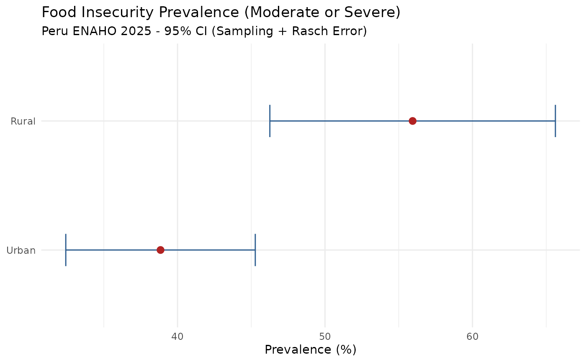
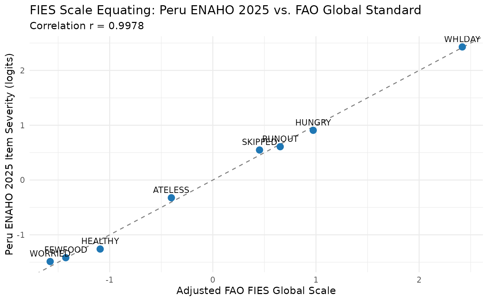

Plot Food Insecurity Prevalences and Rasch Psychometric Diagnostics
Source:R/plot_fies.R
plot_fies.RdCreates publication-ready visualizations of FIES prevalence estimates (with 95 (`"equating"`, `"items"`, `"scree"`). Uses `ggplot2` when installed and falls back gracefully to base R graphics otherwise.
Arguments
- x
Either a prevalence table returned by [estimate_fies()], a household `fies_tbl` returned by [prepare_fies()], or a `"fies_validation"` object returned by [validate_rasch()].
- type
Type of plot to produce: * `"prevalence"`: Forest/point-interval plot of prevalence estimates and confidence intervals (default when `x` comes from [estimate_fies()]). * `"equating"`: Calibration scatter plot comparing Peru's item severities against the rescaled FAO FIES Global Standard (`adj_global_st`). * `"items"`: Item Infit statistics with the acceptable `[0.7, 1.3]` Rasch fit band. * `"scree"`: Scree plot of residual principal component eigenvalues to assess unidimensionality.
- indicator
For `type = "prevalence"`, filters `"Moderate or Severe"` (`"mod_sev"`, default) or `"Severe"` (`"sev"`).
- group
Optional character string filtering a specific `group` column value in prevalence plots (e.g., `"region_inei"` or `"department"`).
- year
Optional integer year to plot (defaults to the most recent year).
- ...
Additional arguments (currently unused).
Value
A `ggplot` object if `ggplot2` is installed, or invisibly `NULL` when rendered via base R graphics.
Examples
df_demo <- prepare_fies(sample_data = fies_sample, quiet = TRUE)
est <- estimate_fies(df_demo, by = "area")
plot_fies(est, type = "prevalence")
#> `height` was translated to `width`.

plot_fies(df_demo, type = "equating")
